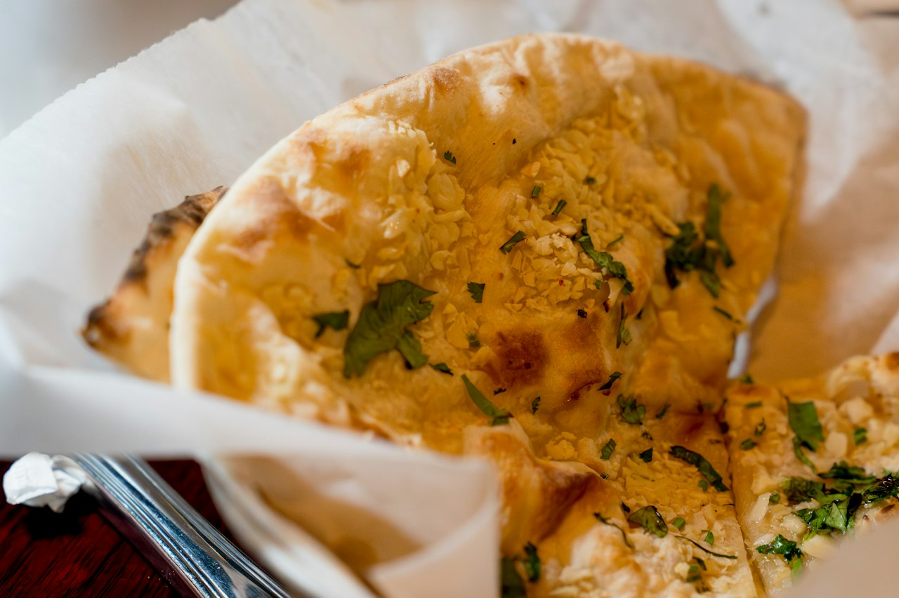

Garlic-Herb Flatbreads
Soft skillet or oven flatbreads with garlic and herb flavor, useful for wraps, dips, or quick pizza bases.
Baking · Side · Meal Prep

Per serving
200kcal
6gprotein
Makes 6 servings. Whole batch: 1200 kcal, 34g protein.
Ingredients
Steps
- Mix dough ingredients and knead briefly.
- Rest 10 to 20 minutes.
- Divide and roll thin.
- Cook in hot skillet or bake until puffed and spotted.
- Brush with garlic-herb butter or oil.
Cook's notes
Can sit between naan, pita, and yogurt flatbread depending on hydration.